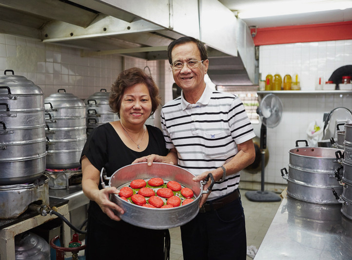
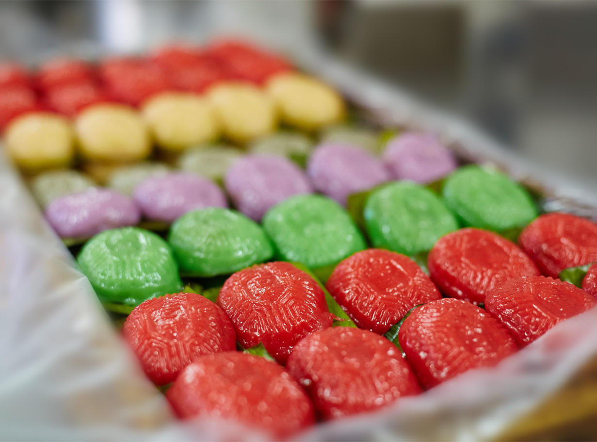
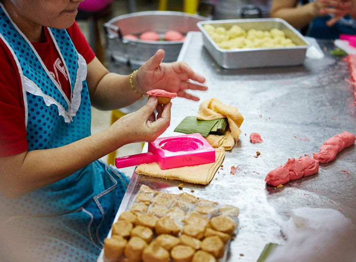
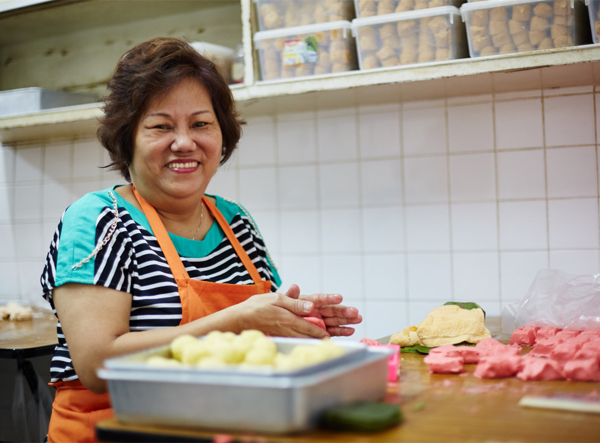

<ion-content [fullscreen]="true">

  <perfect-scrollbar style="height: 100%;width:100%;">

    <ion-grid class="ion-no-padding"
      style="width:100%;margin-top:-8px;padding:0;margin: 0;font-family:Open Sans,Arial,sans-serif;">
      <ion-row class="ion-no-padding ion-align-self-right" style="width:100%;padding:0;margin: 0;" size="12"
        size-md="12" size-xs="12">
        <div class="swiper-container" 
          style="   background-size:100% 100%;background-image: 'url(../../../assets/aboutus.jpeg)';min-height:600px; background-repeat: no-repeat; background-color: #facaca;">
         
        </div>


      </ion-row>

      <ion-row style="padding-top: 50px;padding-left:8%;padding-right:8%;">
        <ion-col size-lg="6" size-md="6" size-xs="12" style="height:100%;">
          <!--  -->
          
           <p class="graph ion-text-center" style="padding-left:8%;padding-right:10%;">Steamming kueh in the traditional way</p>
        </ion-col>
        <ion-col size-lg="6" size-md="6" size-xs="12" style="height:100%;padding:10px;">
          <p style="margin:0; padding:10;color: #333333 !important;width:100% !important;font-size:30px;font-family: Open Sans,Arial,sans-serif !important;"
            class="ion-text-left">THE HISTORY OF JI XIANG
          </p>
          <p class="graph" style="padding-top:10px;padding-bottom:14px">
            Ji Xiang Confectionery started its business from a kitchen in a HDB flat. This family-run business started
            out selling only two fillings, peanut and sweet bean paste, to provision shops and hawkers around the
            neighbourhood. Their hand-made ang ku kueh soon garnered them a loyal following, which led to the setup of
            their space at Everton Park in 1988. Since then, Ji Xiang Confectionery (吉祥食品, ‘吉’ meaning Luck and ‘祥’
            meaning prosperity) has been a mainstay at Block 1 Everton Park and commonly known to customers as Everton
            Park Ang Ku Kueh.
          </p>
          <p class="graph">
            Till today, Mr Toh, is still the resident towkay of the business while his wife continues to be the chief
            baker.
          </p>
        </ion-col>
      </ion-row>

      <ion-row style="padding-left:8%;padding-right:8%;padding-top:20px">

        <ion-col size-lg="6" size-md="6" size-xs="12" style="height:100%;padding:20px;">
          <p class="graph" style="padding-top:10px;padding-bottom:14px">
            While ang ku kueh has its roots in China, most Singaporean stalls, including Ji Xiang, have adopted the
            Nonya style of making this delicacy. The key difference being that of the much chewier pastry skin that
            is primarily made out of glutinous rice flour, coconut milk, sugar and approved food colouring.
          </p>
          <p class="graph">
            Business for Mr Toh started out in 1985 by selling only two fillings, peanut and sweet bean paste, to
            itinerant stalls and hawkers around the area. Soon garnered them a loyal following which led to the setup of
            their space at Everton Park in 1988.
          </p>
        </ion-col>
        <ion-col size-lg="6" size-md="6" size-xs="12" style="height:100%;">
          
            <p class="graph ion-text-center">The many varieties available</p>
        </ion-col>
      </ion-row>

      <ion-row  style="padding-top:30px;padding-left:8%;padding-right:8%;">
        <ion-col size="12" style="padding:10px;">

          <ion-slides style="height:300px;width:100%;" pager="true" [options]="slideOpts" >
            <ion-slide>
              <div class="swiper-container" style="background-position:35% 49%;background-size: cover;
          background-image: 'url(../../../assets/slide1.webp)';
          min-height:350px;width:100%;background-repeat: no-repeat;">
  
              </div>
            

            </ion-slide>
               <!--   <ion-slide>
              <div class="swiper-container" style="background-position:35% 49%;background-size: cover;
          background-image: 'url(../../../assets/slide2.webp)';
          min-height:350px;width:100%;background-repeat: no-repeat;">

              </div>

            </ion-slide>
           <ion-slide>
              <div class="swiper-container" style="background-position:35% 49%;background-size: cover;
          background-image: 'url(../../../assets/slide3.webp)';
          min-height:350px;width:100%;background-repeat: no-repeat;">

              </div>
   

            </ion-slide>

         <ion-slide>
              <div class="swiper-container" style="background-position:35% 20%;background-size: cover;
          background-image: 'url(../../../assets/slide5.jpg)';
          min-height:350px;width:100%;background-repeat: no-repeat;">

              </div>
      

            </ion-slide>

           <ion-slide>
              <div class="swiper-container" style="background-position:35% 49%;background-size: cover;
          background-image: 'url(../../../assets/slide6.jpg)';
          min-height:350px;width:100%;background-repeat: no-repeat;">

              </div>
 
            </ion-slide> -->
          </ion-slides>
          <p class="graph ion-text-center" style="padding-top:10px">The founders of Ji Xiang Mr & Mrs Toh</p>
        </ion-col>
      </ion-row>


      <ion-row style="padding-top: 30px;padding-left:8%;padding-right:8%;">
        <ion-col size-lg="6" size-md="6" size-xs="12" style="height:100%;">
          
          <p class="graph ion-text-center" style="padding-top:10px;padding-left:8%;padding-right:10%;">Manually filling and moulding the kueh</p>
        </ion-col>
        <ion-col size-lg="6" size-md="6" size-xs="12" style="height:100%;padding:10px;">
          <p style=" line-height: 100%;margin:0; padding:10;color: #333333 !important;width:100% !important;font-size:26px;font-family: Open Sans,Arial,sans-serif !important;"
            class="ion-text-left">IT’S NOT JUST LUCK (吉) THAT LEADS TO PROSPERITY (祥) HOW JI XIANG STANDS OUT FROM THE
            REST
          </p>
          <p class="graph" style="padding-top:10px;padding-bottom:14px">
            While some heritage hawkers abide by strict secrets and guidelines to their craft, Ji Xiang has over the
            years, managed to balance keeping up with the times while ensuring that quality is ultimately still the key
            element in their product. One such factor is the insistence of filling and moulding the ang ku kuehs by hand
            to ensure that the skin remains the right thickness and chewiness.
          </p>
          <p class="graph">
            It may be hard to notice at first, but the ‘Red’ (红) of Ji Xiang’s kuehs actually have a tinge of orange to
            make it more appealing, their popularity and also marketing genius of placing their shop name ‘吉祥’ on their
            kuehs, instead of the usual ‘寿 ‘ (meaning longevity)
          </p>
        </ion-col>
      </ion-row>

      <ion-row style="padding-top: 10px;padding-left:8%;padding-right:8%;">

        <ion-col size-lg="6" size-md="6" size-xs="12" style="height:100%;padding:10px;">
          <p class="graph" style="padding:10px;">
            A multiple winner of The Green Book Best Food Awards and more recently, the Slow Food Singapore Heritage
            Hero Award, the story of this family run business is as endearing as that of the local delicacy that is ang
            ku kueh.
            <br />
            Though there is no official confirmation on this, Ji Xiang is also perhaps the first stall in Singapore to
            introduce new fillings beyond the traditional peanut and sweet bean paste, this after Mr Toh received
            feedback from customers who were keen on new and exciting fillings. Today, Ji Xiang sells a total of eight
            fillings that include, savoury bean paste, corn, coconut, yam, durian (seasonal) and seasame, each easily distinguished
            by the different colour of the skin.
            <br />
            Typically, the stall will prepare thousands of ang ku kueh in a day and are particularly busy during the
            Hungry Ghost Festival and 7th Day of the Lunar New Year (人日). Ang ku kuehs, which symbolise prosperity, is
            also a frequent feature as a gift to celebrate the turning of a month old of a child (满月).
          </p>
        </ion-col>
        <ion-col size-lg="6" size-md="6" size-xs="12" style="height:100%;">
          
        <p class="graph ion-text-center" style="padding-top:10px">Mrs Toh, The Chief Baker of Ji Xiang</p>
        </ion-col>
      </ion-row>


  


      <ion-row style="background-color:#f9f9f9;padding-left:8%;padding-right:8%;">
        <ion-col size-lg="12" size-md="12" size-xs="12" style="height:100%;">
          <h2 style="padding:10px;color: #000 !important;width:100% !important;font-size:40px;font-weight:bold;"
            class="ion-text-left">Ji Xiang Contact and Business Hour
          </h2>
        </ion-col>

        <ion-col size-lg="5" size-md="5" size-xs="12" style="height:100%;">
          <p class="graph" style="padding:10px;">
            <b style="font-size:16px;">Our Contact</b>
            <br />
            Ji Xiang Confectionery
            <br />
            Everton Park, Block 1 #01-33, Singapore 081001​
            <br />
            Call: +65 6223 1631
            <br />
            Fax: +65 6324 6460
            <br />
            orders@jixiangeverton.com.sg
            <br />
            <b style="font-size:16px;">Business Hours</b>
            <br />
            Open: Monday to Saturday, 8am to 5pm
            <br />
            Close: Sunday & Public Holidays
            <br />
            <b style="font-size:16px;">Find Us</b>
            <br />
            Nearest MRT Station: Outram Park Station, E16/NE3, Exist Gate G
            <br />
            Nearest Bus Stop at Everton Park Block 3: 61,166,167,196,197
            <br />
            <b style="font-size:16px;">Like Us on Facebook</b>
            <br />
            <iframe
              src="
              https://www.facebook.com/v2.6/plugins/page.php?adapt_container_width=true&app_id=&channel=
              https%3A%2F%2Fstaticxx.facebook.com%2Fx%2Fconnect%2Fxd_arbiter%2F%3Fversion%3D46%23cb%3Df32cc0585ba7e2%26d
              omain%3Djixiangconfectionery.com.sg%26origin%3Dhttps%253A%252F%252Fjixiangconfectionery.com.sg
              %252Ff3744b80ef4bb68%26relation%3Dparent.parent&container_width=477&height=300&hide_cover=false&href=https%3A%2F%2Fwww.facebook.com%2FJi-Xiang-Everton-102042051956917%2F&locale=en_US&sdk=joey&show_facepile=true&small_header=false&tabs=timeline&adapt_container_width=true
              "
              width="450" height="130" style="border:none;overflow:hidden" scrolling="no" frameborder="0"
              allowfullscreen="true" allow="autoplay; clipboard-write; encrypted-media; picture-in-picture; web-share">
            </iframe>
          </p>
        </ion-col>
        <ion-col size-lg="7" size-md="7" size-xs="12" style="height:100%;">
          <agm-map [latitude]="lat" [longitude]="lng" [zoom]="16" style="height: 450px;width:580px">
            <agm-marker [latitude]="lat" [longitude]="lng"></agm-marker>
          </agm-map>
        </ion-col>

      </ion-row>


      <ion-row class="ion-no-padding ion-align-self-right" style="width:100%;padding:0;margin: 0;" size="12"
        size-md="12" size-xs="12">

        <ion-row style="margin-top: 10px;padding-left:8%;padding-right:8%;">
          <!-- <ion-col style="display: flex;justify-content: left;height:100%;" size-lg="4" size-md="4" size-xs="12">
            
          </ion-col> -->
          <ion-col class="ion-text-center ion-align-self-center" size-lg="12" size-md="12" size-xs="12" style="height:100%;">
          
            
            <div style="top: 50%;" class="ion-align-self-center">
              <p class="graph  ion-align-self-center"
              style="padding-top:25px;width:100%;padding-left:50px;padding-right:50px;font-size:13.68px;line-height: 25px;
              font-weight: 400;color: #666666!important;  text-align:center;
        display: table-cell;
        vertical-align: middle;">
               
              Ji Xiang Confectionery started its Business from a kitchen in a HDB flat.
              This family run business started out selling only two fillings, peanut and sweet bean taste, to provision
              shops and hawker around the neighbourhood.
              Their hand made Ang Ku Kueh soon garnered them a loyal following, which led to the setup of their space at
              Everton Park in 1988.
              Since then, Ji Xiang Confectionery (Chinese words Ji Xiang Confectionery, "Ji" meaning Luck and "Xiang"
              meaning Prosperity) has been a mainstay at Block 1 Everton Park and commonly known to customers as Everton
              Park Ang Ku Kueh.
            </p>

            </div>
  
          </ion-col>
        </ion-row>


        <!-- <ion-row class="ion-align-self-center" style="margin-top: 10px;margin-bottom: 15px; width:100%;" size="12"
          size-md="12" size-xs="12">
          <ion-col style="display: flex;justify-content: center;" class="ion-align-self-center">

            
          </ion-col>
        </ion-row>

        <ion-row size="12" style="width:100%" class="ion-text-center ion-align-self-center">
          <p class="graph  ion-align-self-center"
            style="width:100%;padding-left:100px;padding-right:100px;font-size:13.68px;line-height: 25px;font-weight: 400;color: #666666!important;">
            Ji Xiang Confectionery started its Business from a kitchen in a HDB flat.
            This family run business started out selling only two fillings, peanut and sweet bean taste, to provision
            shops and hawker around the neighbourhood.
            Their hand made Ang Ku Kueh soon garnered them a loyal following, which led to the setup of their space at
            Everton Park in 1988.
            Since then, Ji Xiang Confectionery (Chinese words Ji Xiang Confectionery, "Ji" meaning Luck and "Xiang"
            meaning Prosperity) has been a mainstay at Block 1 Everton Park and commonly known to customers as Everton
            Park Ang Ku Kueh.
        
          </p>
        </ion-row> -->
      </ion-row>


      <ion-row style="margin-top: 10px;margin-left:15px;margin-right:15px">
        <ion-col size="6" class="ion-text-left" style="font-size:13px;color:#4E5768;">
          Copyright @ 2021 Ji Xiang Confectionery
        </ion-col>
        <ion-col size="6" class="ion-text-right" style="font-size:13px;color:#4E5768;">
          Powered by Ji Xiang Confectionery
        </ion-col>
      </ion-row>
    </ion-grid>
  </perfect-scrollbar>
</ion-content>